INK HOUSE MACAO · USER GUIDE
網站與後台使用說明
給學堂老師與行政人員。前半教你家長在手機上怎麼看課、怎麼報名；後半教你後台怎麼新增、修改課程和照片。
一、家長／學員：手機網站怎麼用
用手機瀏覽器打開 inkhouse-macao.com。以下畫面皆為手機版。
1. 主頁
最上方是學堂照片輪播，左右箭頭可換圖。下面兩顆按鈕：
- 查詢兒童課程 → 只看兒童班
- 查詢成人課程 → 只看成人班
再往下滑是「歡迎來到賞心學堂」，右邊兩張傾斜照片（學堂空間、創作過程）由後台上傳。
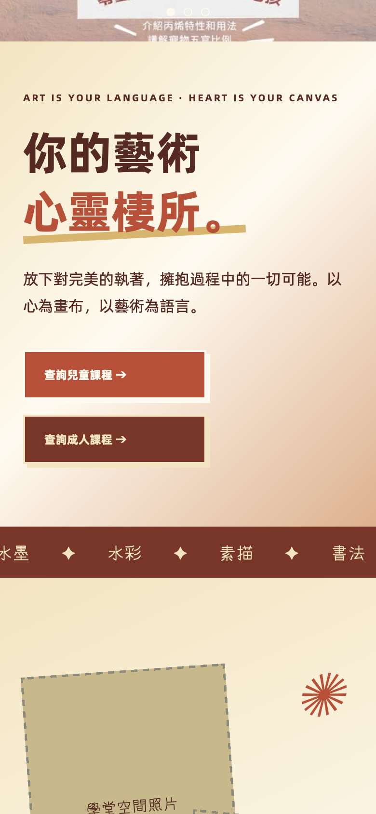
2. 打開選單
右上角三條線是選單，點開後可到：
- 主頁
- 兒童課程／成人課程
- 時間表
- 聯絡我們
- 立即報名
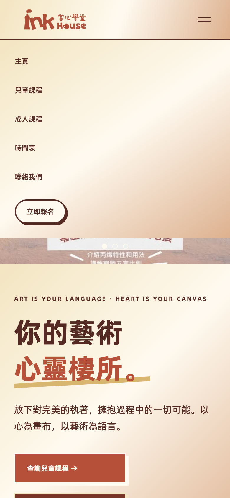
3. 課程列表
可先選「兒童班」或「成人班」，再按類別（水彩、素描等）篩選。點任何一張課程卡，進入詳情。
卡片上會顯示：老師、上課日期／星期／時間、學費。
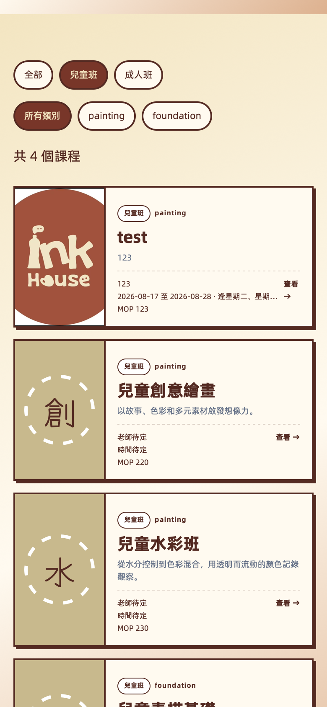
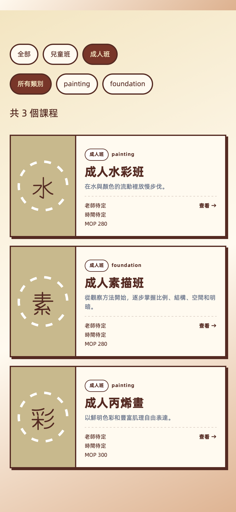
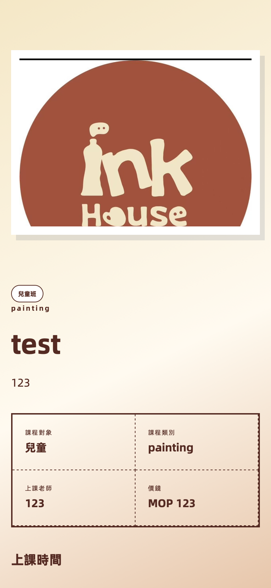
4. 時間表
用「成人班月曆／兒童班月曆」切換，左右箭頭換月份。格子裡的課名可點，會帶到報名頁。
月曆上的日期來自後台填的「開始～結束日期、逢星期幾、上課時間」。
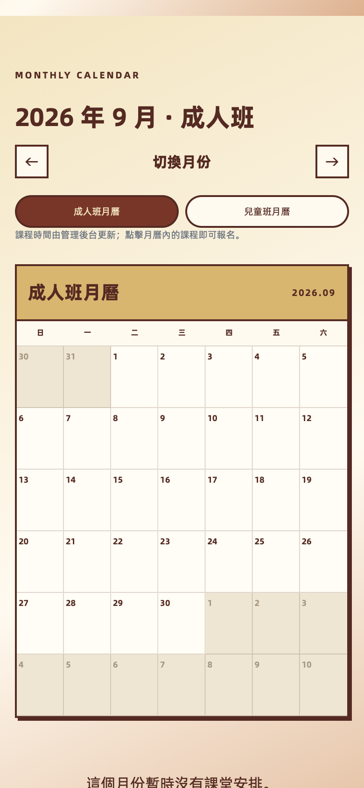
5. 報名
報名成功後，系統會嘗試寄信通知學堂。家長畫面只顯示「報名成功 + 加微信」，不會在網站上付款。
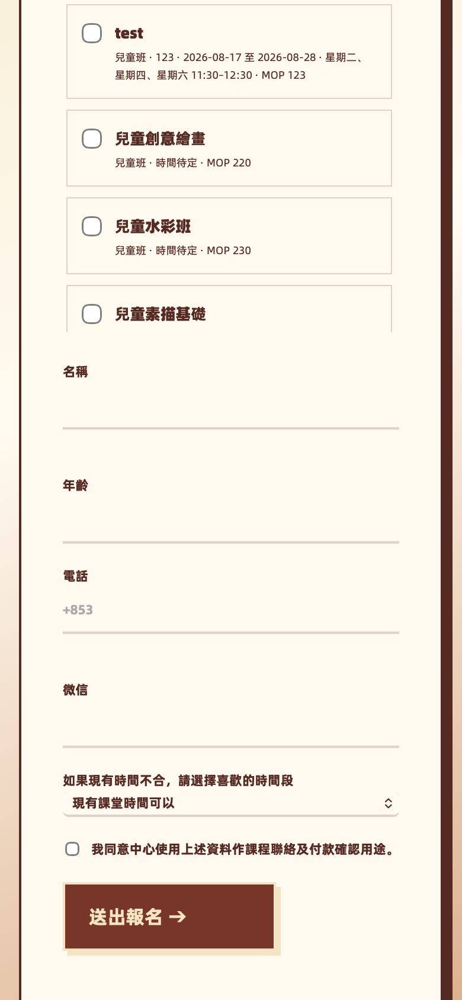
6. 聯絡我們
地址、電話（+853 6275 4126）、微信、Instagram 都在這一頁。微信可按「複製帳號」。
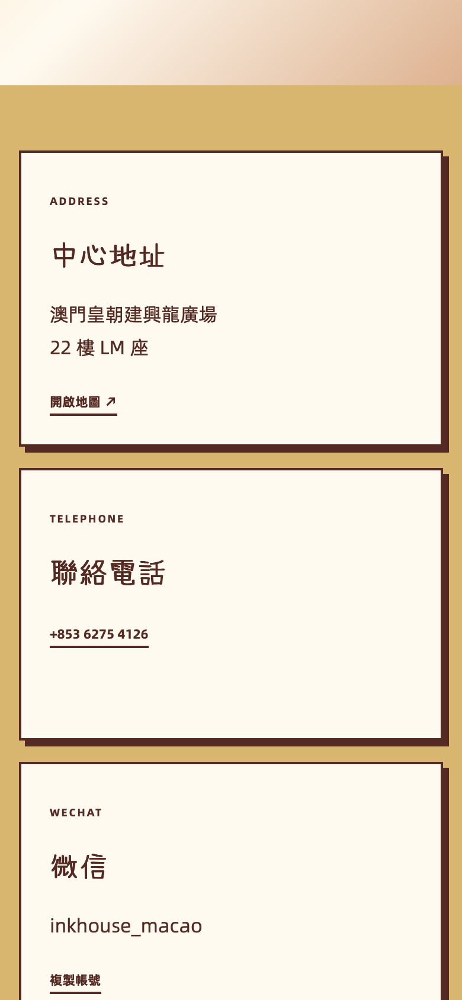
二、後台：登入與各功能
建議用電腦操作；下面截圖為方便對照，同樣是手機寬度。
登入
登入後左側有四個分頁：總覽、課程管理、主頁照片、報名名單。側欄可登出。
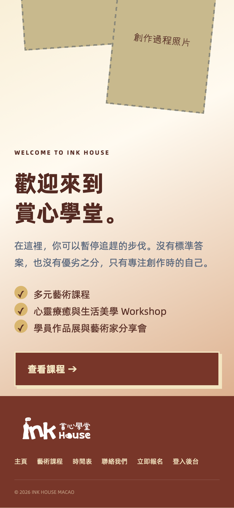
接著會看到登入畫面。輸入 Email 和密碼即可，無需其他設定。
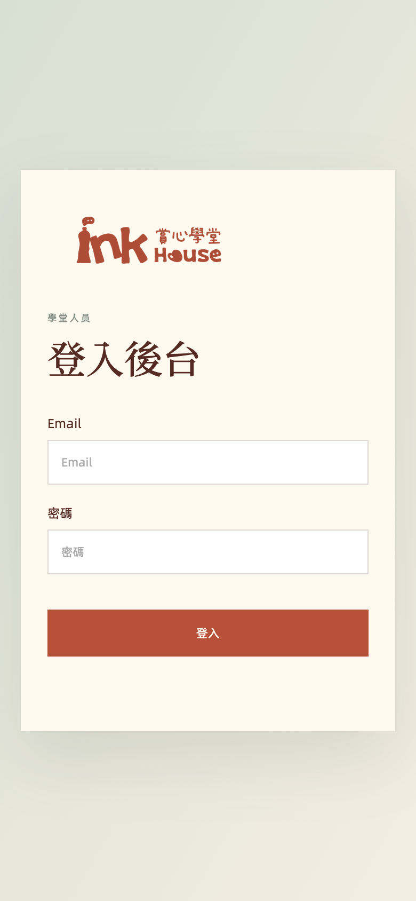
三、後台：新增課程
進入 課程管理，右上角按 ＋ 新增課程。
每個欄位都要填，月曆才會出現這門課：
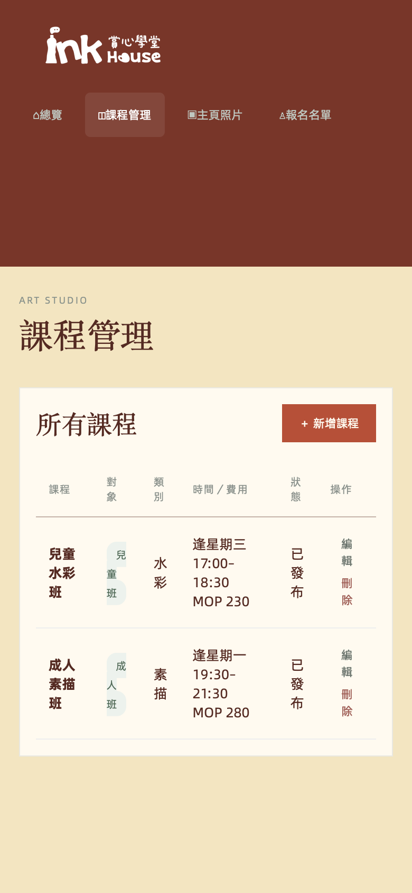
| 課程名稱 | 例如：兒童水彩班 |
|---|---|
| 課程對象 | 兒童班 或 成人班（會出現在對應月曆） |
| 課程類別 | 自由輸入，例如水彩、素描、書法 |
| 價錢 MOP | 數字即可，前台會顯示成 MOP 230 |
| 開始／結束日期 | 這門課開課到結束的區間 |
| 逢星期幾 | 可多選。至少選一天，否則無法儲存 |
| 上課開始／結束時間 | 每一堂課的時段 |
| 上課老師 | 會顯示在課程卡與月曆 |
| 課程簡介 | 前台詳情頁的介紹文字 |
| 課程圖片 | JPG / PNG / WebP / GIF，最大 5MB |
沒填日期、星期或時間，前台會顯示「時間待定」，月曆也不會出現這門課。
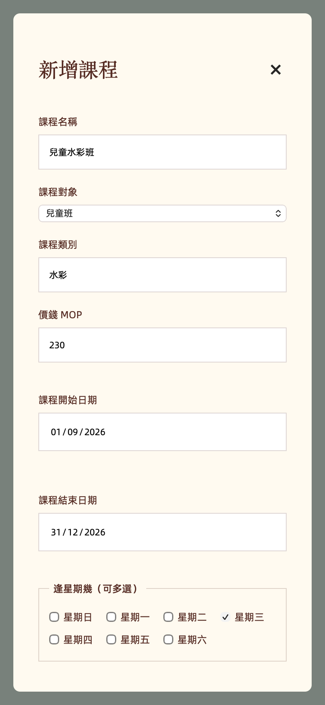
四、後台：修改或刪除課程
五、後台：更換主頁照片
進入 主頁照片。分兩塊：
輪播照片（主頁最上面）
- 「＋ 新增輪播照片」上傳，可多張
- 「上移／下移」改播放順序
- 「刪除」拿掉該張
- 還沒上傳任何輪播時，主頁仍顯示網站預設畫面
歡迎區塊照片（主頁下面兩張）
- 大圖 · 學堂空間
- 小圖 · 創作過程
- 各只能一張，按「上傳／更換」即可
建議用橫向、光線清楚的課堂或空間照片。上傳後請用手機打開主頁確認。
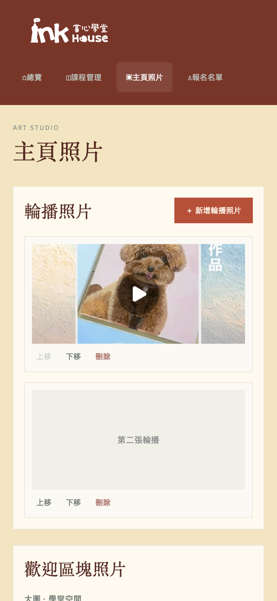
六、後台：查看／刪除報名
進入 報名名單 可看到學員姓名、年齡、電話、微信、報名課程、偏好時間、報名日期。
右側「刪除」會從名單移除該筆（先會再問一次）。總覽頁的「最新報名」也可以刪。
刪除報名 不會 自動通知家長，如需取消請另外用微信聯絡。
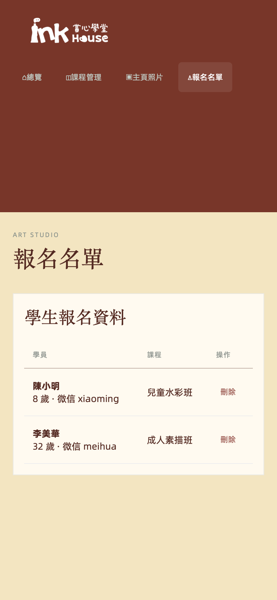
七、常見問題
前台看不到剛新增的課？
重新整理頁面。確認已填開始／結束日期、星期和時間，並且對象選對（兒童／成人）。
月曆是空的？
切換對的「成人班／兒童班」，再換到有課的月份。課程日期區間必須涵蓋那個月份。
照片上傳失敗？
檔案需小於 5MB，格式限 JPG、PNG、WebP、GIF。請確認已登入後台。
忘記後台密碼？
請找負責網站的人協助重設。
報名有沒有通知？
名單一定會進後台。郵件通知需 Resend 網域驗證完成後才會寄出；沒寄到也不影響報名資料。